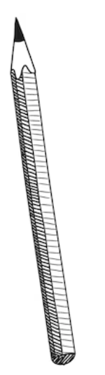

ethan moon.
Hello! I'm Ethan Moon.
I like building things that are useful whether big or small.
Recently graduated with a B.S. in Information Science from University of Maryland
Right now: robot motion retargeting at Argonne, plus a few passion projects
Before that: data and software engineering, prev @ PNNL, Argonne, Fermilab
Things I use a lot: Python, SQL, JavaScript, ROS 2, claude :)
I like to go to the gym, golf, run, and travel in my me time

click me!